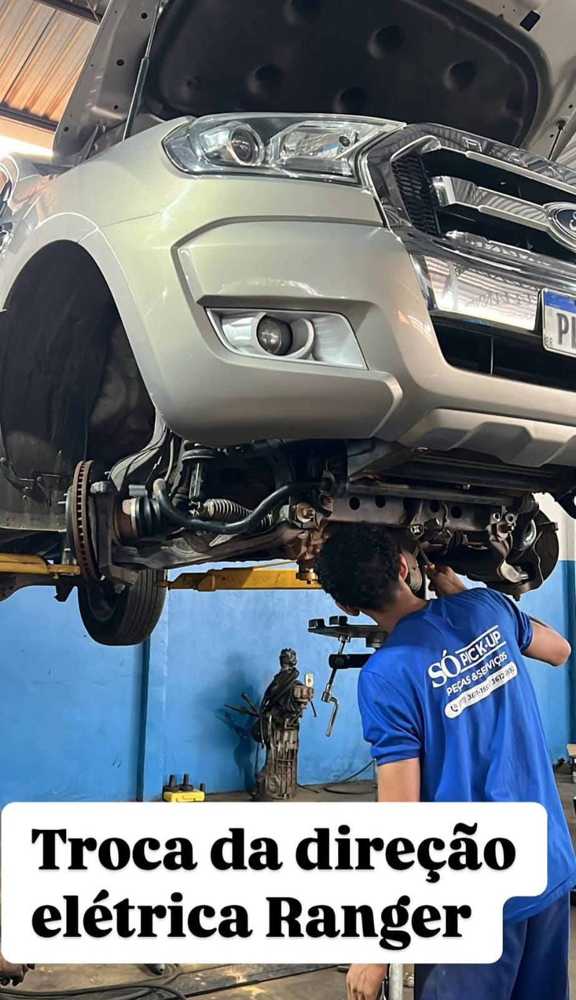
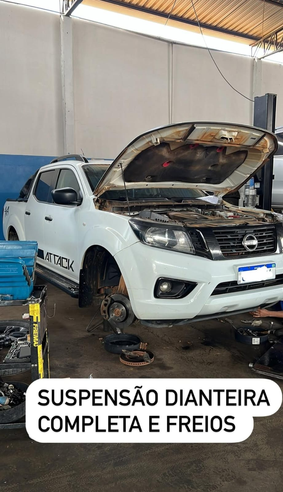
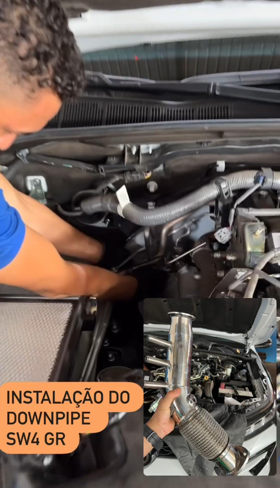
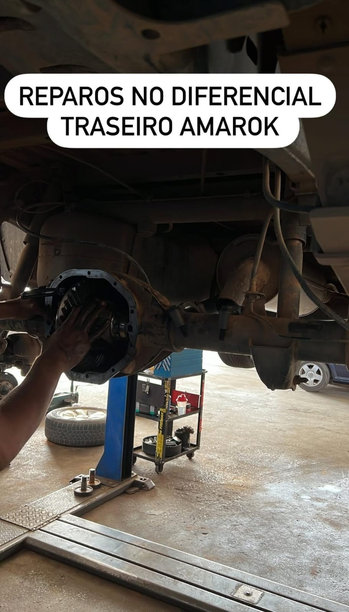
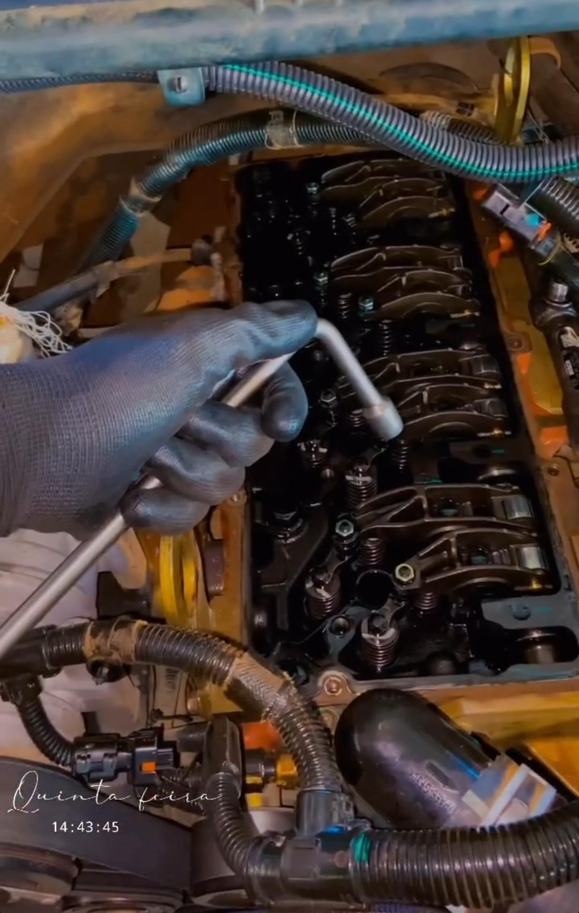
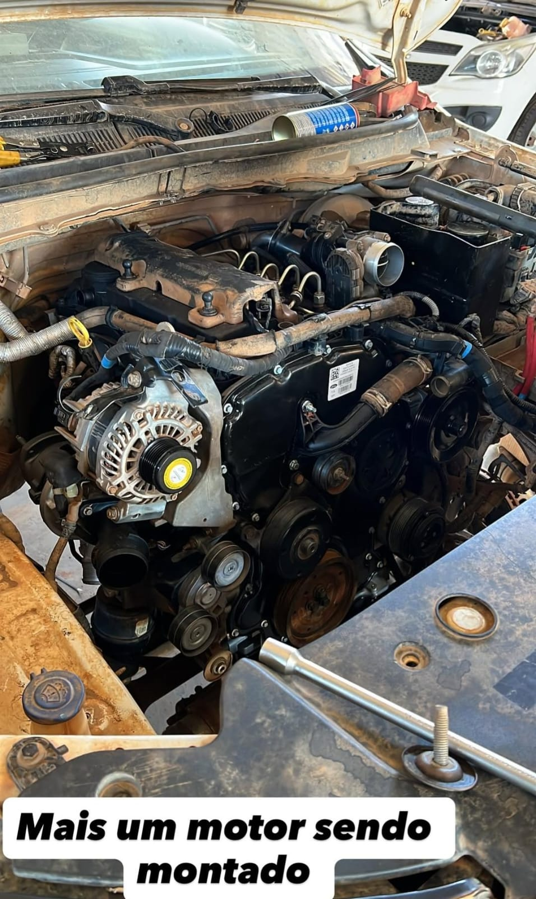
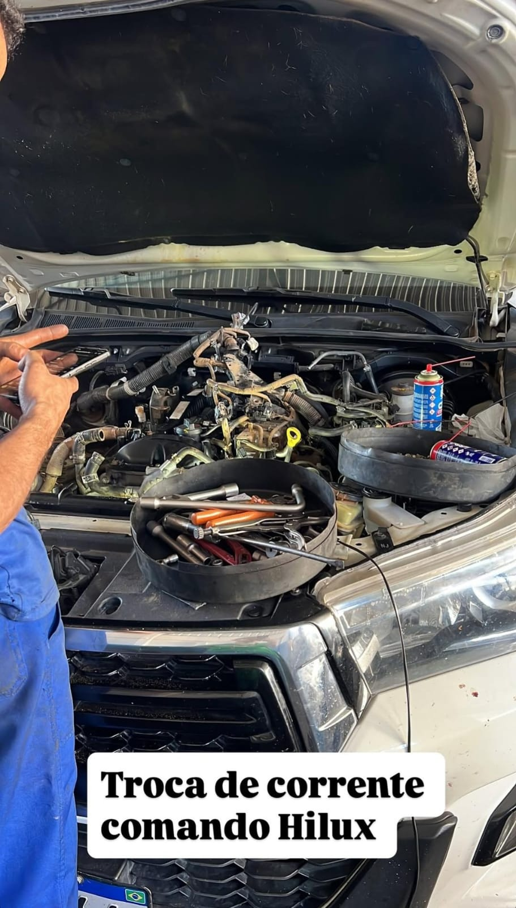
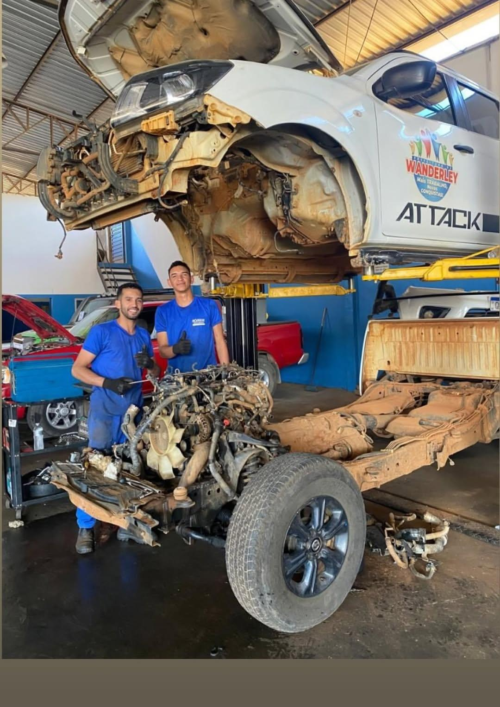
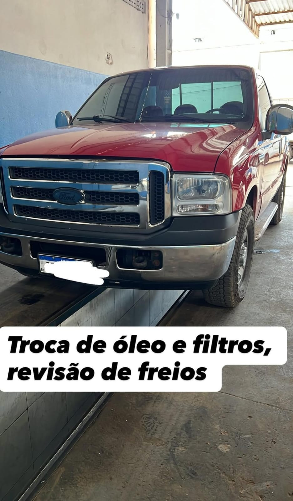

Mecânica em geral e preventiva para caminhonetes
+25 anos
de oficina ativa e atendimento contínuo
Ford, Toyota, VW e mais
serviços em caminhonetes de diferentes marcas
Serra do Mimo
estrutura pronta para Barreiras e cidades próximas
Mais de 25 anos cuidando de pickups com serviço técnico, peça certa e atenção de oficina de verdade.
A So Pick-Up nasceu da experiência do Dely, mecânico da Ford por mais de uma década. Desde o fim de 1999, a oficina atende Barreiras-BA e região com revisão geral, troca de óleo, freios, suspensão, motor, câmbio automático, diferencial e peças genuínas para caminhonetes de várias marcas.
- Especialidade em caminhonetes
- Peças genuínas
- Atendimento regional
Desde 1999
Pickup no elevador, diagnóstico no detalhe
Rotina de oficina para quem precisa rodar com confiança.
Revisão geral
Troca de óleo
Freios e suspensão
Motor
Câmbio automático
Diferencial
Peças em geral
Atendimento em Barreiras-BA
O que a sua caminhonete encontra aqui
Serviço especializado para uso urbano, estrada, fazenda e rotina pesada.
Revisão para prevenir parada e desgaste antes que o problema cresça.
Checagem de óleo, filtros, freios, suspensão e itens essenciais para manter a caminhonete pronta para o uso diário, viagens e rotina de trabalho.
- Troca de óleo e filtros
- Revisão de freios
- Inspeção preventiva

Suspensão, direção e freios com atenção ao conforto, segurança e estabilidade.
A oficina realiza revisões e reparos em suspensão dianteira e traseira, direção elétrica, freios e componentes que fazem diferença no desempenho da pickup.
- Suspensão completa
- Direção elétrica
- Freios dianteiros e traseiros

Motor, desempenho e transmissão para quem exige força e resposta no dia a dia.
Serviços de reparo de motor, troca de óleo de câmbio automático e intervenções técnicas para manter a caminhonete rodando com eficiência.
- Reparos de motor
- Troca de óleo de câmbio automático
- Serviços específicos em desempenho

Diferencial revisado e peças genuínas para caminhonetes de várias marcas.
A So Pick-Up também trabalha com revisão de diferencial e disponibiliza peças em geral para dar mais segurança e durabilidade ao serviço entregue.
- Revisão de diferencial
- Reposição com peças genuínas
- Atendimento focado em pickup

Experiência que começou na prática
Da vivência técnica na Ford para uma oficina voltada ao universo das caminhonetes.
O trabalho da So Pick-Up começou a partir da trajetória do Dely, mecânico da Ford por mais de dez anos. Essa base técnica ajudou a formar uma oficina reconhecida em Barreiras-BA por serviço bem executado, atenção ao diagnóstico e cuidado com pickups que precisam de resistência no uso real.
Início da oficina
Início da So Pick-Up com foco em mecânica especializada.
Atendimento constante
Atendimento contínuo a clientes de Barreiras e da região.
Conhecimento aplicado
Oficina preparada para manutenção preventiva e reparos técnicos.
Oficina em movimento
Serviços reais, rotina de bancada e caminhonetes atendidas no dia a dia.




Atendimento regional
Barreiras-BA e cidades próximas com serviço focado em confiança, clareza e resultado.
Quem procura revisão geral, troca de óleo e peças em geral encontra uma oficina com histórico longo, especialidade definida e estrutura para atender caminhonetes com atenção de quem conhece esse segmento.
Galeria da oficina
Registros de serviços, revisões e caminhonetes atendidas pela So Pick-Up.

Onde encontrar a So Pick-Up
Endereço
Avenida Venturosa de Brito, nº 141
Serra do Mimo
Barreiras-BA
Horários
Atendimento em Serra do Mimo para quem quer orçamento rápido, referência clara e serviço certo na caminhonete.
A oficina recebe clientes de Barreiras-BA e cidades próximas com atendimento direto para revisão geral, troca de óleo, freios, suspensão, motor, câmbio automático, diferencial e peças em geral.
Serra do Mimo
Barreiras-BA
Segunda a sexta: 08h às 12h | 14h às 18h
Sábado: 08h às 12h
Domingo: fechado
- Atendimento para Barreiras e cidades próximas
- Especialidade em caminhonetes de várias marcas
- Orçamento e agendamento direto pelo WhatsApp
Use o canal mais prático para pedir orientação, orçamento ou confirmar horário.
77 99910-5389 77 99946-6079